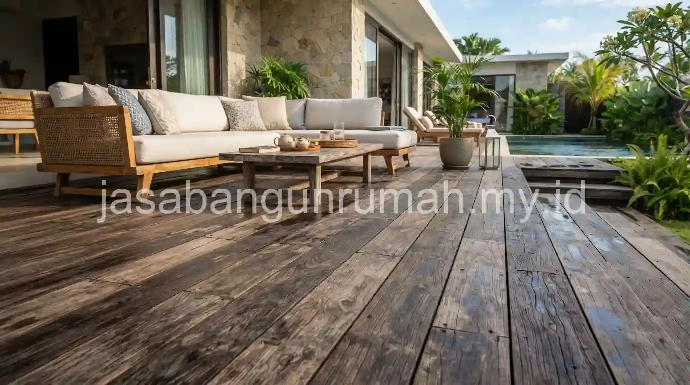

Daftar Isi
Biaya pembangunan villa mewah satu lantai dengan private pool di Ubud mencakup tiga komponen utama yang cukup signifikan, yaitu pekerjaan kolam renang limpasan, sistem filtrasi pompa Hayward, dan decking kayu ulin di area outdoor sekitar kolam.
Berapa Estimasi Biaya Pekerjaan Kolam Renang Limpasan Overflow Pool?
Kolam renang limpasan atau overflow pool memiliki struktur yang lebih kompleks dibandingkan kolam renang konvensional, karena membutuhkan balancing tank tersembunyi di bawah permukaan tanah untuk menampung air yang meluap dari tepi kolam secara terus-menerus.
Biaya pekerjaan kolam jenis ini mencakup pembuatan struktur beton kedap air untuk badan kolam utama, pembangunan balancing tank sebagai penampung air limpasan, pemasangan pipa sirkulasi, serta finishing menggunakan material seperti keramik kolam atau batu alam pada bagian tepi limpasan yang menjadi ciri khas visual utama kolam jenis ini.
Semakin besar dimensi kolam dan semakin kompleks bentuk limpasan yang diinginkan, misalnya limpasan pada dua atau tiga sisi kolam sekaligus, semakin tinggi pula biaya yang dibutuhkan dibandingkan kolam limpasan sederhana dengan satu sisi limpasan saja. Efek visual air yang seolah menyatu dengan pemandangan sekitar, seperti sawah atau lembah di kawasan Ubud, menjadi daya tarik utama yang membuat jenis kolam ini banyak diminati untuk villa mewah di kawasan tersebut.
Apa Fungsi dan Biaya Sistem Filtrasi Pompa Hayward pada Kolam Villa?
Sistem filtrasi pompa Hayward berfungsi menjaga sirkulasi dan kejernihan air kolam secara otomatis, menyaring kotoran dan partikel halus yang masuk ke dalam air sehingga kolam tetap layak digunakan tanpa perlu pengurasan manual yang sering.
Biaya sistem filtrasi ini mencakup unit pompa sirkulasi, tangki filter berisi media pasir silika, serta perpipaan yang menghubungkan kolam utama dengan balancing tank dan unit filter, ditambah instalasi panel kontrol untuk mengatur waktu operasional pompa secara otomatis sesuai kebutuhan volume air kolam.
Pemilihan kapasitas pompa dan ukuran tangki filter sebaiknya disesuaikan dengan volume total air kolam, karena kapasitas yang terlalu kecil akan membuat sirkulasi air tidak optimal, sementara kapasitas berlebihan hanya akan menambah biaya operasional listrik tanpa manfaat tambahan yang signifikan. Sistem filtrasi berkualitas baik seperti merek Hayward umumnya juga lebih tahan lama dan minim gangguan teknis dibandingkan sistem filtrasi dengan spesifikasi lebih rendah, sehingga mengurangi biaya perawatan dalam jangka panjang.

Berapa Kisaran Biaya Pengerjaan Decking Kayu Ulin untuk Area Outdoor?
Decking kayu ulin menjadi pilihan populer untuk area outdoor di sekitar kolam renang villa mewah karena daya tahannya yang sangat baik terhadap kelembapan dan paparan sinar matahari langsung, sesuai dengan kondisi iklim tropis di kawasan Ubud yang lembap sepanjang tahun.
Biaya pengerjaan decking dihitung berdasarkan luas area yang akan dipasangi kayu ulin, mencakup rangka dudukan di bawah decking, papan kayu ulin itu sendiri, serta finishing pelapis kayu yang membantu mempertahankan warna alami sekaligus melindungi permukaan dari jamur akibat kelembapan tinggi di sekitar area kolam renang.
Kayu ulin dipilih dibandingkan jenis kayu lain karena karakteristiknya yang keras dan tahan terhadap air, sehingga cocok digunakan pada area yang sering terkena percikan air kolam maupun hujan tropis yang cukup sering terjadi di kawasan Ubud. Meski harga kayu ulin cenderung lebih tinggi dibandingkan kayu decking alternatif, daya tahannya dalam jangka panjang membuat material ini tetap menjadi pilihan yang dianggap sepadan untuk proyek villa mewah dengan standar kualitas premium.
Baca Juga: Jasa Arsitek untuk Desain Villa Mewah
Perawatan berkala pada decking kayu ulin tetap diperlukan, meski frekuensinya jauh lebih jarang dibandingkan jenis kayu decking lain, terutama untuk mempertahankan tampilan warna kayu yang bisa memudar akibat paparan sinar matahari yang intens sepanjang tahun di wilayah tropis seperti Bali.
Ketiga komponen ini, yaitu kolam limpasan, sistem filtrasi, dan decking kayu ulin, sebaiknya direncanakan secara terintegrasi sejak awal proyek, karena posisi balancing tank, jalur pipa filtrasi, dan area decking saling berkaitan dalam satu kesatuan desain outdoor villa. Perencanaan yang terpisah-pisah tanpa koordinasi menyeluruh berisiko menimbulkan masalah teknis, misalnya jalur pipa yang harus dibongkar ulang karena berbenturan dengan rencana pemasangan decking yang baru ditentukan belakangan.
Bagi pemilik lahan di Ubud yang ingin mendapatkan simulasi biaya lebih rinci untuk pembangunan villa mewah dengan private pool, dapat ajukan form penawaran untuk berkonsultasi dengan tim yang berpengalaman menangani proyek kolam renang limpasan dan decking outdoor di kawasan Bali.